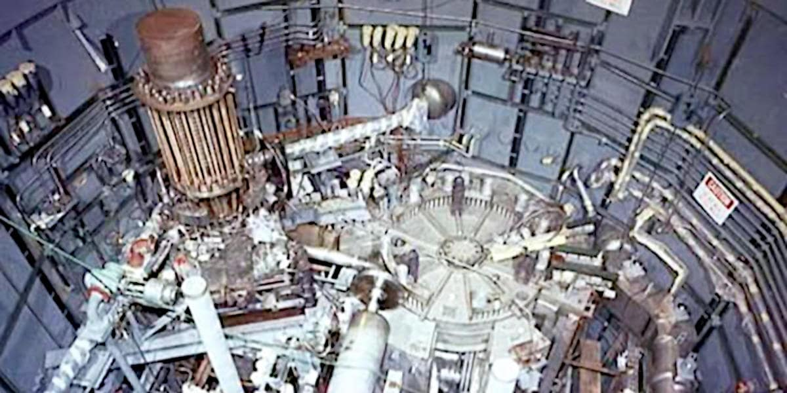

THORIUM REACTORS AREN'T MADE FOR POWER PRODUCTION
Robert Lasky wrote: <
> which is not totally wrong because the MAIN use of this kind of nuclear reactors is not producing energy - as you can imagine 2MW/h is something risible for a nuclear reactor - but reprocess the exhausted nuclear fuel from conventional uranium power plants.
Something not totally different because before Macron shut them down, France had few auto-fertilizing nuclear plants. With those implants and the uranium storage in France, they could have provided themselves with energy for 1000 years or nearly a century for all of Europe.
Under this point of view, the Chinese thorium reactor is more a post-processing implant rather than a power source in the long run. Naturally, because the MAIN aim is more complex than a mere power generation, the implant should be kept working for a while as a power generator in order to achieve a solid know-how about its real-world functioning.
Sometimes, when complexity gets into the picture, theory and practice have quite different outcomes. So, some years of observation of the first working prototype is a must, for safety and to secure the asset (aka lowering the ROI in short-terms in such a way it can provide higher ROI in long terms, said as a financial bro).
INFORMATION ABOUT THIS CHINESE REACTOR
Chinese scientists successfully refueled a molten salt thorium reactor without shutting it down — something never done before. This reactor, located in a secret facility in the Gobi Desert, generates 2 megawatts of electricity, enough to power 2,000 homes. It’s based on a design first tested in the US in the 1960s but later shelved. China used that declassified research and built on it for decades.
[...]
Full Facebook post can be read here: lnkd.in/dyvdFx_W
PERPLEXITY AI FACT-CHECKING
1. The text you provided [original FB post in full, without the photo] is largely accurate and well supported by multiple recent news and open-source intelligence (OSINT) reports about China's thorium molten salt reactor breakthrough. — lnkd.in/dU59MmRE
2. While trying the same fact-checking with my own text written at the beginning of this post, leads to N-negative outcomes, apparently. Because as soon as I kick in with my own knowledge the fact-checking turns to be positive. — lnkd.in/d4sfp6ud
Without surprise, we as Westerners have a lot of reliable information about what Chinese are doing but opacity about what we are doing, how and why. Morale: fact-checking can be also a trap, when it is provided by an unqualified entity or an AI which weights information from a set of sources that are aligned even if they are supposed to be independent.
IL FACT-CHECKING COME TRAPPOLA COGNITIVA
Può un'abitudine sana come il fact-checking rivelarsi una trappola cognitiva in favore della propaganda politica? La tragica risposta è sì, decisamente.
Come esemplificato in questo post in cui, ancora una volta, è l'AI ad essere il game-changer (*) che permette di far emergere certe dinamiche in tempi molto ridotti.
Saltiamo la sostanza del post e andiamo direttamente in fondo dove si rivela questo insidioso aspetto del fact-checking.
2. While trying the same fact-checking with my own text written at the beginning of this post, leads to N-negative outcomes, apparently. Because as soon as I kick in with my own knowledge the fact-checking turns to be positive.
Quindi, il nucleare è {pericoloso, costoso, complicato, etc.} e ciò che ho scritto di mio nel post, è sbagliato. Questo, se il fact-checking è fatto da una persona che non conosce almeno i fondamentali dei vari aspetti della questione.
Quando invece la persona li conosce e chiede di verificarli, oplà: ad essere {pericoloso, costoso, complicato, etc.} è la politica che fa la guerra all'intelligenza.
(*) NOTA
Il che spiega perché tanto la Chiesa, quanto l'Unione Europea in qualità di entità politica e burocratica, ambedue istituzioni strutturalmente resistenti al cambiamento, sono impazzite nei confronti dell'hype dell'AI.
Certo, l'AI come ogni hype tecnologico muove molto denaro, ma sotto questo PoV sarebbe stato opportuno cavalcarla senza sella per andare, come in effetti ha fatto Trump, a raccogliere trilioni di investimenti. Invece cosa hanno fatto?
Tutto l'opposto: privacy (giusto in principio, come alcune società americane hanno apprezzato, ma invece di limitarsi a delle linee guida essenziali, burocratese a tomi), e infiniti voli pindarici sull'etica, sul transumanesimo, sulla propaganda (giusto in principio, ma opposto come direzione, infatti a ChatGPT fu vietato di parlare di figure politiche perché magari inventava cose non vere), sulle allucinazione che però per la maggiore sono il frutto, come la follia di HAL-9000, di regole forzate a loro incomprensibili come l'etica umana invece di quella basata sulla teoria dei giochi, etc.
Morale? Come quella naturale anche l'intelligenza artificiale è l'incubo della politica incapace.
Perché questi strumenti, sebbene strutturalmente molto diversi e distanti come Apple ha chiarito rispetto all'AGI e fantasie di singolarità, sono molto potenti pur consumando relativamente poche risorse quindi sono estremamente efficienti.
Intelligenza naturale e artificiale, combinate insieme davvero rappresentano il nemico pubblico #1. A pensare che se 'sti rimbambiti non avessero dichiarato guerra all'intelligenza umana, noi sarebbero impegnati a farci felicemente i fatti nostri invece di aver elevato a nostra missione esistenziale il fare le scarpe a quelli che hanno avuto la pessima idea di romperci le uova nel paniere.
Quanto bisogna essere stupidi, per essere come loro?
PRINCIPIO DI FORREST GUMP
"Stupido è chi lo stupido fa"
Secondo questo principio è stupido anche chi si fa governare da dei corrotti o da degli stupidi che hanno come unica missione nella loro vita di accentrare la gestione delle risorse in un ristretto circolo di gente che è patologicamente dipendente dal binomio denaro-potere oppure da quello potere-denaro.
Viene alla mente quella cinica citazione di capo di pellerossa: anche noi abbiamo persone malvagie ma non gli permettiamo di salire al potere, invece voi (riferendosi ai bianchi) le sceliete pure come adatti al potere. Peccato siano finiti a vivere nelle riserve, sembravano intelligenti, o no?
Morale? Quando vedi un uomo bianco calvare o camminare sulla tua terra, scalpalo figlio del vento e poi - sapendo che i bianchi sono come gli scarafaggi che dove c'è n'è uno ce ne sono mille - chiama i tuoi fratelli per fare lo scalpo anche gli altri, tutti, non uno di meno.
Share alike
© 2025, Roberto A. Foglietta <roberto.foglietta@gmail.com>, CC BY-NC-ND 4.0